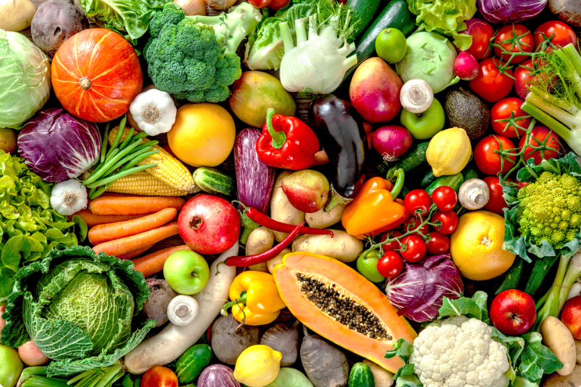
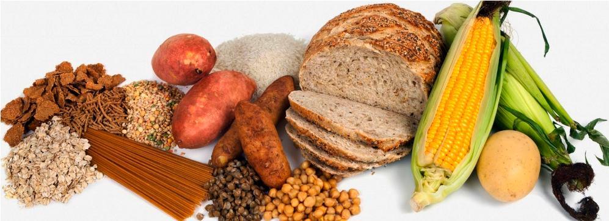

Concepto
Qué es: El "Plato del Buen Comer" es una guía visual que muestra cómo deben distribuirse los diferentes grupos de alimentos en las comidas diarias para mantener una dieta equilibrada.
¿Qué debe contener? Haz clic en las pestañas que se presentan a continuación:
Verduras y frutas
Deben ocupar la mitad del plato. Son ricas en vitaminas, minerales y fibra.
Cereales y tubérculos
Deben ocupar un cuarto del plato. Son una fuente principal de energía.
Leguminosas y alimentos de origen animal
Deben ocupar el cuarto restante del plato. Son esenciales para el crecimiento y la reparación de tejidos.